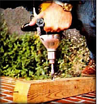
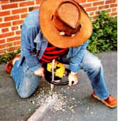

Two nice people that you should know about just drove miles out of their way to stop by our North Carolina offices and demonstrate an amazing new tool that can be worth an extra arm and a leg to a great many MOTHER readers.
The people are Roger and Karen La Chance, P O. Box 1167, Arroyo Grande, Calif. 93420. And the tool is a gasoline (yes, gasoline!)-powered drill. No, the La Chances didn't invent this new piece of hardware . . . but the company that did doesn't seem especially interested in publicizing its availability and the La Chances are the first to understand the tremendous value that the drill can have to farmers, homesteaders, and other MOTHER-type readers . . . and so we're gonna give Roger and Karen this free plug and so there.
What this clever little machine is, you see, is a ,ally rugged and heavy duty "electric" drill cap of pushing almost any bit up to one inch or ore in diameter through almost anything . . . but without the "electric". Instead, the brawny little g is powered by a small two-cycle gasoline en Which means that, for the first time, you can ow have all the muscle of a real "hair on its nest" electric drill down on the back 40, way up a the bush country, or in any of the other out-of the-way places that MOTHER's readers are inreasingly setting up waterwheels, constructing ordwood houses, and so on.
Yeah, we know. At first blush, your reaction has o be, "who needs another gasoline engine out in he woods?" That, anyway, was our initial reaction here at MOTHER's research facilities. But when you realize that 45.8% of MOTHER's readers own chain saws ... and when Roger starts showing you just how smoothly his "Piston Drill" punches great big ole one-inch holes in tough hardwoods and bars of aluminum . . . it doesn't take you long to realize that a heck of a lot more solar collectors and windplants and other "alternatives" hardware are going to get built with one heck of a lot less total impact on the planet-and a great deal faster too-once folks know about this truly amazing tool.
Anyhow the La Chances are now supporting their own pe rsonal back-to-the-land movement by selling their $189.50 Piston Drill by mail. And if you've ever found yourself trying to punch a long series of holes in wood or metal away out beyond the utility lines somewhere, you'll know what a bargain that can be.
We've met the La Chances, found them to be sincere and enthusiastic back-to-the landers, and we believe you'll find them to be good folks to do business with. So, if you're interested in this new (and exceptionally well-built) tool, you now know who sells it, how much they sell it for, and how to reach them. And if you just want more info on the Piston Drill, drop $2.00 into the mail and ask Karen and Roger to send you a copy of the Piston Drill operating manual.-The Editors.
|
 |
 |
|